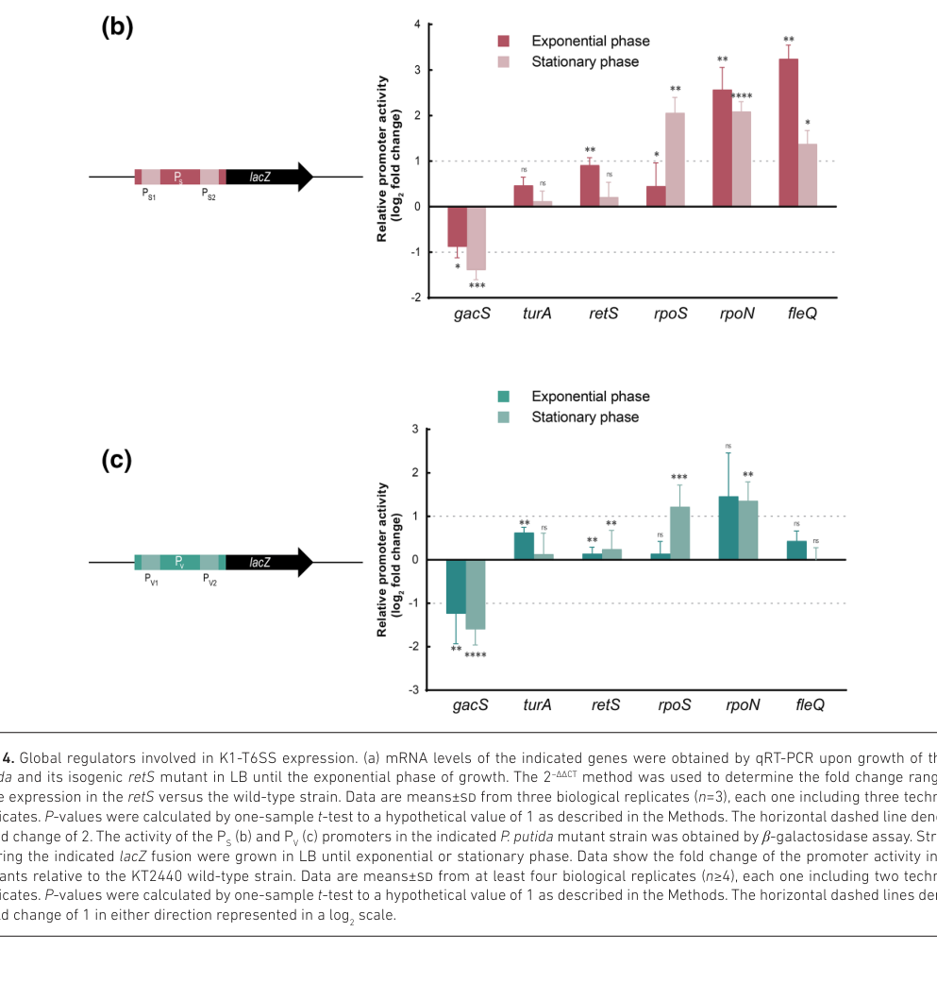

rpoN (PP_0952; synonym ntrA) encodes sigma-54 (σ54/σN), an alternative RNA polymerase sigma factor. It binds the bacterial RNA polymerase core enzyme to form a holoenzyme that recognizes the distinct -24/-12 class of promoters (conserved GGN10GC element) rather than the σ70-type -35/-10 promoters. The σ54-RNAP holoenzyme binds its promoter but is held in a transcriptionally inert closed complex until an enhancer-binding protein (bEBP, e.g. NtrC, XylR, FleQ) uses AAA+ ATPase activity to remodel σ54 and trigger ATP-dependent open-complex formation. Because a single σ54 interfaces with many signal-responsive bEBPs, RpoN acts as a global transcriptional hub controlling nitrogen assimilation, flagellar/chemotaxis genes, secretion systems, and aromatic/xyl catabolic operons in P. putida KT2440.
| GO Term | Evidence | Action | Reason |
|---|---|---|---|
|
GO:0000976
transcription cis-regulatory region binding
|
IEA
GO_REF:0000117 |
ACCEPT |
Summary: RpoN/sigma-54 recognizes sigma-54 promoter elements (the -24/-12 motif) as part of the RNA polymerase holoenzyme.
Reason: Retain cis-regulatory region binding in the sigma-factor context; sigma-54 directly recognizes the conserved -24/-12 promoter motif.
Supporting Evidence:
PMID:19570137
sigma(N) recognition motif
file:PSEPK/rpoN/rpoN-deep-research-falcon.md
σ54 recognizes promoters with conserved elements at **−24 and −12** relative to the transcription start site
|
|
GO:0001216
DNA-binding transcription activator activity
|
IEA
GO_REF:0000120 |
MARK AS OVER ANNOTATED |
Summary: DNA-binding transcription activator activity is not the best model for a sigma factor. RpoN provides promoter-recognition specificity to the holoenzyme; transcriptional activation of sigma-54 promoters is driven by separate AAA+ enhancer-binding proteins, not by RpoN acting as a classical DNA-binding activator.
Reason: RpoN specifies RNA polymerase promoter recognition and initiation rather than acting as a conventional transcription activator; the principal activation step is ATP-dependent remodelling of sigma-54 by enhancer-binding proteins. Retain sigma factor activity (GO:0016987) as the precise MF.
Supporting Evidence:
file:PSEPK/rpoN/rpoN-deep-research-falcon.md
Its primary function is to provide **promoter recognition specificity** to the RNAP holoenzyme at σ54 promoters
file:PSEPK/rpoN/rpoN-deep-research-falcon.md
transcription initiation requires **specialized enhancer-binding proteins (EBPs)** that contain **AAA+ ATPase domains** to **remodel σ54** using ATP hydrolysis
|
|
GO:0003677
DNA binding
|
IEA
GO_REF:0000002 |
MARK AS OVER ANNOTATED |
Summary: Generic DNA binding is true (RpoN has a C-terminal DNA-binding domain and HTH/RPON box) but is less informative than sigma factor activity and promoter binding.
Reason: Retain the more specific GO:0016987 (sigma factor activity) and GO:0000976 (cis-regulatory region binding) instead of generic DNA binding.
Supporting Evidence:
PMID:19570137
preformed E-sigma(N)-PatzR closed complex
file:PSEPK/rpoN/rpoN-deep-research-falcon.md
an **N-terminal activator-interacting domain** and a **C-terminal DNA-binding domain**
|
|
GO:0006352
DNA-templated transcription initiation
|
IEA
GO_REF:0000002 |
ACCEPT |
Summary: RpoN functions in DNA-templated transcription initiation by directing the holoenzyme to sigma-54 promoters and supporting open-complex formation after activator remodelling.
Reason: Retain the transcription initiation process annotation; this is a core part of sigma-factor function.
Supporting Evidence:
file:PSEPK/rpoN/rpoN-deep-research-falcon.md
the σ54-RNAP holoenzyme can bind its promoter but is **blocked from forming a transcriptionally competent open complex** without help
|
|
GO:0016987
sigma factor activity
|
IEA
GO_REF:0000002 |
ACCEPT |
Summary: Sigma factor activity is the core molecular function of RpoN. As the sigma-54 (σN) subunit it confers -24/-12 promoter specificity on the RNA polymerase core enzyme.
Reason: Retain as the precise molecular-function annotation for this gene.
Supporting Evidence:
file:PSEPK/rpoN/rpoN-deep-research-falcon.md
RpoN (σ54, also called σN) is an **alternative sigma factor** that binds the bacterial RNA polymerase (RNAP) core enzyme to form an RNAP holoenzyme
file:PSEPK/rpoN/rpoN-uniprot.txt
Sigma factors are initiation factors
|
|
GO:0032993
protein-DNA complex
|
IEA
GO_REF:0000117 |
KEEP AS NON CORE |
Summary: Protein-DNA complex is supported for promoter-bound E-sigma54 complexes but is not the core function.
Reason: Retain as non-core complex context; the functionally salient state is the E-sigma54 closed complex at the promoter.
Supporting Evidence:
PMID:19570137
preformed E-sigma(N)-PatzR closed complex
|
|
GO:2000142
regulation of DNA-templated transcription initiation
|
IEA
GO_REF:0000108 |
ACCEPT |
Summary: RpoN regulates transcription initiation by directing sigma-54-dependent promoter recognition and gating initiation through enhancer-binding-protein-controlled open-complex formation.
Reason: Retain this process annotation; sigma-54 systems are tightly gated at the initiation step by signal-responsive bEBPs.
Supporting Evidence:
file:PSEPK/rpoN/rpoN-deep-research-falcon.md
a **single σ54** can interface with **many EBPs**, enabling regulation of diverse processes (motility, secretion, nutrient assimilation)
|
|
GO:0042802
identical protein binding
|
IPI
PMID:23320542 Evidence for self-association of the alternative sigma facto... |
KEEP AS NON CORE |
Summary: Self-association of sigma-54 is experimentally supported (region I and region III inter-monomer contacts) but is ancillary to sigma factor activity.
Reason: Retain as a non-core interaction feature; self-association may represent an auto-antagonistic regulatory state rather than the holoenzyme function.
Supporting Evidence:
PMID:23320542
interacts stably with itself
|
|
GO:0000976
transcription cis-regulatory region binding
|
IPI
PMID:19570137 Activation and repression of a sigmaN-dependent promoter nat... |
ACCEPT |
Summary: RpoN/sigma-54 recognizes sigma-54 promoter elements (the -24/-12 / sigma(N) recognition motif) as part of RNA polymerase holoenzyme.
Reason: Retain cis-regulatory region binding in the sigma-factor context, experimentally supported at the PatzR sigma(N) promoter.
Supporting Evidence:
PMID:19570137
sigma(N) recognition motif
|
|
GO:0001216
DNA-binding transcription activator activity
|
IPI
PMID:19570137 Activation and repression of a sigmaN-dependent promoter nat... |
MARK AS OVER ANNOTATED |
Summary: DNA-binding transcription activator activity is not the best model for a sigma factor; activation of sigma-54 promoters depends on separate AAA+ enhancer-binding proteins.
Reason: RpoN specifies RNA polymerase promoter recognition and initiation rather than acting as a conventional transcription activator; retain sigma factor activity (GO:0016987).
Supporting Evidence:
file:PSEPK/rpoN/rpoN-deep-research-falcon.md
Its primary function is to provide **promoter recognition specificity** to the RNAP holoenzyme at σ54 promoters
|
|
GO:0032993
protein-DNA complex
|
IPI
PMID:19570137 Activation and repression of a sigmaN-dependent promoter nat... |
KEEP AS NON CORE |
Summary: Protein-DNA complex is supported for promoter-bound E-sigma54 complexes but is not the core function.
Reason: Retain as non-core complex context; reflects the E-sigma54 promoter-bound closed complex.
Supporting Evidence:
PMID:19570137
preformed E-sigma(N)-PatzR closed complex
|
|
GO:0045893
positive regulation of DNA-templated transcription
|
IDA
PMID:19570137 Activation and repression of a sigmaN-dependent promoter nat... |
ACCEPT |
Summary: RpoN positively regulates transcription at sigma-54-dependent promoters (e.g. PatzR activated by NtrC) once the closed complex is remodelled to an open complex.
Reason: Retain as process context for sigma-54-dependent transcription; experimentally supported for the NtrC-activated PatzR sigma(N) promoter.
Supporting Evidence:
PMID:19570137
activated by NtrC and repressed by AtzR
|
|
GO:0001000
bacterial-type RNA polymerase core enzyme binding
|
ISS
file:PSEPK/rpoN/rpoN-deep-research-falcon.md |
NEW |
Summary: RpoN/sigma-54 binds the bacterial RNA polymerase core enzyme to form the holoenzyme that recognizes -24/-12 promoters. This defining interaction with core RNAP is not currently captured in the GOA record.
Reason: The sigma factor's core mechanism is to associate with the bacterial RNA polymerase core enzyme; this more precise MF is well supported by the sigma-54 literature but is missing from existing GOA annotations. Assigned by conserved sigma-54-family mechanism (ISS); no KT2440-specific structural experiment is cited.
Supporting Evidence:
file:PSEPK/rpoN/rpoN-deep-research-falcon.md
RpoN (σ54, also called σN) is an **alternative sigma factor** that binds the bacterial RNA polymerase (RNAP) core enzyme to form an RNAP holoenzyme
|
Q: Which KT2440 promoters are directly dependent on RpoN under nutrient-limited and aromatic-compound growth conditions?
Suggested experts: Bacterial transcription and sigma-54 regulon experts
Q: Is the RpoN-dependent repression of the K1-T6SS gene cluster mediated by an RpoN-activated repressor, and which enhancer-binding protein (e.g. FleQ) couples to RpoN at this locus?
Suggested experts: Pseudomonas T6SS and sigma-54 regulation experts
Experiment: Combine RpoN ChIP-seq with transcriptomics in wild type and rpoN deletion/depletion strains across nitrogen limitation and aromatic-substrate growth to distinguish direct promoter targets from secondary (indirect) effects.
Type: ChIP-seq and condition-specific RNA-seq
Experiment: Test direct sigma-54 binding at candidate -24/-12 motifs (including the K1-T6SS promoter region) by in vitro EMSA/footprinting with purified E-sigma54 holoenzyme to confirm whether RpoN-dependent regulation is direct or indirect.
Type: In vitro EMSA and DNase I footprinting with purified holoenzyme
The research report should be a detailed narrative explaining the function, biological processes, and localization of the gene product. Citations should be given for all claims.
You should prioritize authoritative reviews and primary scientific literature when conducting research. You can supplement
this with annotations you find in gene/protein databases, but these can be outdated or inaccurate.
We are specifically interested in the primary function of the gene - for enzymes, what reaction is catalyzed, and what is the substrate specificity? For transporters, what is the substrate? For structural proteins or adapters, what is the broader structural role? For signaling molecules, what is the role in the pathway.
We are interested in where in or outside the cell the gene product carries out its function.
We are also interested in the signaling or biochemical pathways in which the gene functions. We are less interested in broad pleiotropic effects, except where these elucidate the precise role.
Include evidence where possible. We are interested in both experimental evidence as well as inference from structure, evolution, or bioinformatic analysis. Precise studies should be prioritized over high-throughput, where available.
The target protein (UniProt P0A171) is annotated as RNA polymerase sigma-54 factor and the gene name rpoN (synonym ntrA) in Pseudomonas putida KT2440 (ordered locus name PP_0952). In P. putida KT2440 transcriptomic work, rpoN (PP_0952) is explicitly referred to as “Sigma factor RpoN,” matching the UniProt description (and distinguishing it from similarly named genes in other organisms). (mozejkociesielska2017mediumchainlengthpolyhydroxyalkanoatessynthesis pages 9-10)
RpoN (σ54, also called σN) is an alternative sigma factor that binds the bacterial RNA polymerase (RNAP) core enzyme to form an RNAP holoenzyme with distinct promoter specificity and a distinct activation mechanism from σ70. (yu2021theregulatoryfunctions pages 1-2, busby2024transcriptionactivationin pages 10-12)
σ54 recognizes promoters with conserved elements at −24 and −12 relative to the transcription start site, including a conserved motif described as GGN10GC. This contrasts with σ70-family promoters, which are typically defined by −35/−10 elements. (yu2021theregulatoryfunctions pages 1-2, busby2024transcriptionactivationin pages 10-12)
A central “textbook” feature of σ54-dependent transcription is that the σ54-RNAP holoenzyme can bind its promoter but is blocked from forming a transcriptionally competent open complex without help. EcoSal Plus (2024) describes that σ54 Region I obstructs DNA opening; therefore transcription initiation requires specialized enhancer-binding proteins (EBPs) that contain AAA+ ATPase domains to remodel σ54 using ATP hydrolysis, enabling promoter melting/open complex formation. (busby2024transcriptionactivationin pages 10-12, busby2024transcriptionactivationin pages 6-8)
A complementary review summary emphasizes that EBPs usually have (i) an N-terminal signal-sensing domain, (ii) a central conserved AAA+ ATPase domain that interacts with σ54 and hydrolyzes ATP to drive activation, and (iii) a C-terminal DNA-binding domain. (yu2021theregulatoryfunctions pages 1-2)
A review describes σ54/RpoN as containing two conserved functional domains: an N-terminal activator-interacting domain and a C-terminal DNA-binding domain—consistent with UniProt’s sigma54 AID and DNA-binding annotations for P0A171. (yu2021theregulatoryfunctions pages 2-4, yu2021theregulatoryfunctions pages 1-2)
RpoN is not an enzyme and does not catalyze a chemical reaction. Its primary function is to provide promoter recognition specificity to the RNAP holoenzyme at σ54 promoters and to integrate environmental signals through EBP-controlled activation, thereby controlling transcription initiation at specific regulons. (busby2024transcriptionactivationin pages 10-12, yu2021theregulatoryfunctions pages 1-2)
As a sigma factor, RpoN functions in the cytoplasm in association with RNAP and promoter DNA (i.e., nucleoid-associated transcription machinery). Mechanistic descriptions place σ54 as part of the RNAP holoenzyme bound to promoter DNA, remodeled by EBPs to initiate transcription. (busby2024transcriptionactivationin pages 10-12, yu2021theregulatoryfunctions pages 1-2)
σ54 systems are typically “hub-like” because a single σ54 can interface with many EBPs, enabling regulation of diverse processes (motility, secretion, nutrient assimilation) depending on which EBP is active under given conditions. This conceptual model is emphasized by the EBP-dependent architecture and the need for ATP-driven remodeling of σ54 at promoters. (yu2021theregulatoryfunctions pages 1-2, busby2024transcriptionactivationin pages 10-12)
A 2023 Microbiology paper mapped transcription of the K1-T6SS gene cluster in P. putida KT2440 and identified four promoters with σ70-type promoter features. Despite this σ70 architecture, the authors show that K1-T6SS expression is repressed by RpoN (σ54) and by FleQ, an enhancer-binding protein often associated with σ54-mediated regulation. (bernal2023transcriptionalorganizationand pages 1-2)
Importantly, the authors interpret the RpoN effect as likely indirect, noting that σ factors usually promote transcription; they tested a putative σ54-binding motif overlapping a σ70 promoter element and found mutational evidence inconsistent with direct RpoN binding and repression at that site (supporting an indirect regulatory mechanism, e.g., via an RpoN-dependent repressor). (bernal2023transcriptionalorganizationand pages 8-10, bernal2023transcriptionalorganizationand pages 2-4)
Image-based evidence: β-galactosidase promoter fusion data (Figures 4–5) show promoter derepression in ΔrpoN and ΔfleQ backgrounds, especially during exponential growth phase, consistent with repression by RpoN/FleQ. (bernal2023transcriptionalorganizationand media 34bb0ce1, bernal2023transcriptionalorganizationand media 28b5d7e5)
A nitrogen-limitation RNA-seq study compared P. putida KT2440 wild type to mutants including an rpoN mutant. The authors report that under nitrogen limitation the rpoN mutant shows a transcriptional response with 58 genes upregulated and 81 genes downregulated, and that many nitrogen-limitation-responsive changes are shared with wild type. (dabrowska2020transcriptomechangesin pages 6-8)
Quantitative examples (fold-change values reported for the rpoN background under nitrogen limitation) include strong changes in respiratory oxidase genes such as ccoO-I (PP_4251: 252.3), ccoQ-I (PP_4252: 209.35), ccoP-I (PP_4253: 118.18), cyoD (PP_0815: 37.9), and cyoC (PP_0814: 15.99). (dabrowska2020transcriptomechangesin pages 6-8)
Nitrogen limitation also induced nutrient acquisition/transport functions in the rpoN background, including urtA–urtD urea uptake genes (e.g., urtA: 11.12-fold in rpoN, comparable to WT 12.7-fold). (dabrowska2020transcriptomechangesin pages 8-10)
In the same nitrogen-limitation context, the authors state that nitrogen limitation increased mcl-PHA synthesis in both wild type and rpoN mutant, and RT-qPCR results indicate that PHA-related transcript levels were comparable in wild type and rpoN mutant under their conditions, suggesting RpoN is not required for the basic transcriptional response of the assayed PHA genes in this setting. (dabrowska2020transcriptomechangesin pages 4-6, dabrowska2020transcriptomechangesin pages 8-10)
A physiological statistic from the study indicates similar nitrogen consumption across strains: at 48 h, ammonium was 2.1 g NH4+-N/L (WT), 1.7 g/L (relA/spoT), 1.63 g/L (rpoN). (dabrowska2020transcriptomechangesin pages 4-6)
K1-T6SS in P. putida KT2440 has been described as an antimicrobial weapon used to outcompete phytopathogens and protect plants; understanding its regulatory network is important for designing or controlling biocontrol behavior. The 2023 KT2440 study identifies RpoN and FleQ as repressors (and GacS/GacA as positive regulators), providing actionable regulatory levers for engineering expression of the competitive weapon. (bernal2023transcriptionalorganizationand pages 1-2)
P. putida KT2440 is a biotechnological chassis for producing medium-chain-length polyhydroxyalkanoates (mcl-PHAs). Nitrogen-limitation transcriptomics including an rpoN mutant helps delineate which transcriptional changes during nitrogen limitation are RpoN-sensitive versus RpoN-independent, informing strain design when nitrogen limitation is used as a production trigger. (dabrowska2020transcriptomechangesin pages 8-10, dabrowska2020transcriptomechangesin pages 4-6)
A 2024 EcoSal Plus review highlights a major conceptual difference: for σ70-holoenzyme promoters, activation often works by recruiting more RNAP; for σ54-holoenzyme promoters, the initiation pathway is intrinsically blocked so the principal action of activators is to remodel σ54 (ATP-dependent). This makes σ54 regulons more tightly gated by signal-responsive EBPs. (busby2024transcriptionactivationin pages 6-8, busby2024transcriptionactivationin pages 10-12)
The KT2440 K1-T6SS study provides a useful cautionary example: although σ54 is classically an activatable sigma factor, loss of rpoN derepressed a cluster whose promoters were experimentally characterized as primarily σ70-driven. The authors explicitly note that σ factors generally promote transcription and therefore argue the observed repression is likely indirect (e.g., RpoN activates another gene encoding a repressor, or RpoN influences σ70 promoter usage/competition). This interpretation is consistent with the broader mechanistic framework that RpoN affects global transcriptional allocation and regulatory hierarchies through multiple EBPs and downstream regulators. (bernal2023transcriptionalorganizationand pages 8-10, bernal2023transcriptionalorganizationand pages 2-4, busby2024transcriptionactivationin pages 10-12)
The following table compiles key definitions, KT2440-specific phenotypes, applications, and quantitative statistics with URLs and publication dates.
| Aspect (definition/mechanism/phenotype/application/statistic) | Key points | Evidence (what experiment or statement) | Primary source (first author year) | URL | Pub date |
|---|---|---|---|---|---|
| Definition | rpoN (PP_0952) in Pseudomonas putida KT2440 encodes RpoN/σ54/σN, an alternative RNA polymerase sigma factor, matching UniProt P0A171. | KT2440 transcriptome study lists rpoN (PP_0952) as “Sigma factor RpoN”; broader σ54 literature defines RpoN as σ54/σN. (mozejkociesielska2017mediumchainlengthpolyhydroxyalkanoatessynthesis pages 9-10, yu2021theregulatoryfunctions pages 1-2) | Mozejko-Ciesielska 2017 | https://doi.org/10.1186/s13568-017-0396-z | 2017-05 |
| Mechanism | RpoN recognizes −24/−12 promoters with a conserved GGN10GC motif rather than σ70-type −35/−10 promoters. | Review statement describing direct σ54 promoter recognition at −24/−12 and motif architecture. (yu2021theregulatoryfunctions pages 1-2) | Yu 2021 | https://doi.org/10.3390/ijms222312692 | 2021-11 |
| Mechanism | RpoN-dependent transcription requires enhancer-binding proteins (EBPs) with a central AAA+ ATPase domain. | Review and EcoSal article state σ54 forms a closed complex and needs ATP-driven remodeling by AAA+ EBPs to initiate transcription. (yu2021theregulatoryfunctions pages 1-2, busby2024transcriptionactivationin pages 10-12, busby2024transcriptionactivationin pages 6-8) | Busby 2024 | https://doi.org/10.1128/ecosalplus.esp-0039-2020 | 2024-12 |
| Mechanism | Domain architecture aligns with UniProt family assignment: N-terminal activator-interacting domain and C-terminal DNA-binding domain. | Review explicitly describes two conserved functional domains in σ54/RpoN. (yu2021theregulatoryfunctions pages 2-4, yu2021theregulatoryfunctions pages 1-2) | Yu 2021 | https://doi.org/10.3390/ijms222312692 | 2021-11 |
| Localization/function | RpoN acts in the cytoplasm/nucleoid-associated transcription machinery as part of the RNAP holoenzyme rather than as a secreted or membrane protein. | Mechanistic reviews describe σ54 as binding core RNAP and promoter DNA to direct transcription initiation. (yu2021theregulatoryfunctions pages 1-2, busby2024transcriptionactivationin pages 10-12) | Busby 2024 | https://doi.org/10.1128/ecosalplus.esp-0039-2020 | 2024-12 |
| Phenotype/pathway | Under nitrogen limitation, the rpoN mutant transcriptome clusters closely with wild type for PHA-related expression; mcl-PHA accumulation can still occur without RpoN under these conditions. | RNA-seq and RT-qPCR comparison of WT, relA/spoT, and rpoN mutant; authors state analyzed pha transcripts were at comparable levels in WT and rpoN mutant. (dabrowska2020transcriptomechangesin pages 4-6, dabrowska2020transcriptomechangesin pages 8-10) | Dabrowska 2020 | https://doi.org/10.3390/ijms22010152 | 2020-12 |
| Statistic | In nitrogen-limited cultures, ammonium at 48 h was 2.1 g/L (WT), 1.7 g/L (relA/spoT), 1.63 g/L (rpoN), indicating similar N consumption by the rpoN mutant. | Batch-culture physiology in PHA study. (dabrowska2020transcriptomechangesin pages 4-6) | Dabrowska 2020 | https://doi.org/10.3390/ijms22010152 | 2020-12 |
| Statistic | In the same study, phaI/phaF operon expression was ~40-fold higher than phaC1ZC2D; however, WT and rpoN mutant showed comparable PHA-gene transcript levels. | RT-qPCR across pha loci under N limitation. (dabrowska2020transcriptomechangesin pages 4-6) | Dabrowska 2020 | https://doi.org/10.3390/ijms22010152 | 2020-12 |
| Pathway/regulon | Nitrogen limitation in the rpoN mutant still induced multiple nitrogen acquisition and transport genes, including urtA–urtD urea transporter genes. | RNA-seq table lists strong upregulation of urtA–urtD in WT and rpoN backgrounds. Example: urtA 12.7-fold (WT), 11.12-fold (rpoN). (dabrowska2020transcriptomechangesin pages 8-10) | Dabrowska 2020 | https://doi.org/10.3390/ijms22010152 | 2020-12 |
| Statistic | Nitrogen limitation induced transporter genes associated with a sigma-54-dependent regulator region (PP_2259–PP_2263), but induction was reduced in the rpoN mutant. | RNA-seq table: PP_2260 glycerol-phosphate ABC transporter 17.36-fold (WT) vs 6.74-fold (rpoN); PP_2261 sugar ABC transporter 39.87-fold (WT) vs 8.01-fold (rpoN). (dabrowska2020transcriptomechangesin pages 8-10) | Dabrowska 2020 | https://doi.org/10.3390/ijms22010152 | 2020-12 |
| Statistic | Several respiratory oxidase genes changed strongly in the rpoN mutant under N limitation. | RNA-seq table reports high fold changes in rpoN column, including ccoO-I (PP_4251) 252.3, ccoQ-I (PP_4252) 209.35, ccoP-I (PP_4253) 118.18, cyoD (PP_0815) 37.9, cyoC (PP_0814) 15.99. (dabrowska2020transcriptomechangesin pages 6-8) | Dabrowska 2020 | https://doi.org/10.3390/ijms22010152 | 2020-12 |
| Pathway/regulon | The rpoN-linked nitrogen-response dataset also includes glnL/glnG (NtrB/NtrC system) and chemotaxis/flagellar genes, consistent with σ54 involvement in broader nutrient-response networks. | RNA-seq tables annotate glnL, glnG, chemotaxis genes, and FlgE among N-limitation-responsive loci. (dabrowska2020transcriptomechangesin pages 6-8, dabrowska2020transcriptomechangesin pages 8-10) | Dabrowska 2020 | https://doi.org/10.3390/ijms22010152 | 2020-12 |
| Phenotype/pathway | In KT2440, K1-T6SS expression is repressed by RpoN and FleQ, even though the T6SS promoters themselves are mainly σ70-dependent. | Promoter-lacZ assays in regulator mutants; authors define four σ70-like promoters and show increased expression in rpoN and fleQ mutants. (bernal2023transcriptionalorganizationand pages 1-2, bernal2023transcriptionalorganizationand pages 2-4, bernal2023transcriptionalorganizationand pages 10-13) | Bernal 2023 | https://doi.org/10.1099/mic.0.001295 | 2023-01 |
| Statistic | Promoter derepression in Bernal 2023: deletion of rpoN caused a clear qualitative increase (substantial de-repression; approximately twofold for one tested construct, and stronger for some PS/PV promoter assays) in K1-T6SS promoter activity, especially in exponential phase; exact values are figure-based and not fully readable here. | β-galactosidase assays in WT vs ΔrpoN and ΔfleQ; figure interpretation indicates substantial derepression and one explicitly noted twofold effect for the M1 construct in ΔrpoN. (bernal2023transcriptionalorganizationand pages 8-10, bernal2023transcriptionalorganizationand pages 10-13, bernal2023transcriptionalorganizationand media 34bb0ce1) | Bernal 2023 | https://doi.org/10.1099/mic.0.001295 | 2023-01 |
| Mechanism | For K1-T6SS, RpoN repression appears indirect, not due to direct binding of a canonical σ54 site in the PS2 promoter. | Site-directed mutagenesis of the putative RpoN box showed results inconsistent with direct promoter binding; authors conclude RpoN likely represses via another regulator or noncanonical mechanism. (bernal2023transcriptionalorganizationand pages 8-10, bernal2023transcriptionalorganizationand pages 2-4) | Bernal 2023 | https://doi.org/10.1099/mic.0.001295 | 2023-01 |
| Application | Understanding RpoN/FleQ control of K1-T6SS, a system used by P. putida to outcompete phytopathogens, is relevant to biological control and engineering of plant-protective pseudomonads. | Bernal et al. frame K1-T6SS as a relevant antimicrobial/biocontrol system whose expression could be manipulated through this regulatory network. (bernal2023transcriptionalorganizationand pages 1-2) | Bernal 2023 | https://doi.org/10.1099/mic.0.001295 | 2023-01 |
| Application | In the industrial chassis KT2440, RpoN is part of the nitrogen-responsive regulatory context around mcl-PHA bioplastic production, but available data suggest RpoN is not the main limiting regulator for PHA accumulation on gluconate under N limitation. | Comparative transcriptomics and physiology show mcl-PHA production persists in the rpoN mutant, with WT and rpoN transcriptomes grouping together. (dabrowska2020transcriptomechangesin pages 4-6, dabrowska2020transcriptomechangesin pages 8-10) | Dabrowska 2020 | https://doi.org/10.3390/ijms22010152 | 2020-12 |
| Expert analysis | Current expert consensus is that σ54 systems are unusually specialized: unlike σ70, they often integrate environmental signals through multiple EBPs, making RpoN a global transcriptional hub rather than an enzyme with a substrate. | Review-level synthesis emphasizing enhancer dependence, ATP-coupled activation, and broad regulatory integration. (yu2021theregulatoryfunctions pages 1-2, busby2024transcriptionactivationin pages 10-12, yu2021theregulatoryfunctions pages 9-11) | Busby 2024 | https://doi.org/10.1128/ecosalplus.esp-0039-2020 | 2024-12 |
Table: This table summarizes verified mechanistic, physiological, and application-relevant findings for Pseudomonas putida KT2440 rpoN (RpoN/σ54), with direct evidence and recent authoritative sources. It is useful as a compact evidence map linking sigma-54 mechanism to KT2440-specific phenotypes and quantitative transcriptomic observations.
The most recent KT2440-specific primary evidence retrieved here is concentrated on (i) K1-T6SS regulation (2023) and (ii) nitrogen-limitation transcriptomic/bioprocess contexts (2020). These support firm conclusions about σ54 mechanism (general) and several KT2440 phenotypes and regulatory interactions, but do not constitute a complete, genome-wide KT2440 RpoN regulon map (e.g., ChIP-seq of RpoN in KT2440 was not available in the retrieved set). (dabrowska2020transcriptomechangesin pages 6-8, bernal2023transcriptionalorganizationand pages 1-2)
References
(mozejkociesielska2017mediumchainlengthpolyhydroxyalkanoatessynthesis pages 9-10): Justyna Mozejko-Ciesielska, Dorota Dabrowska, Agnieszka Szalewska-Palasz, and Slawomir Ciesielski. Medium-chain-length polyhydroxyalkanoates synthesis by pseudomonas putida kt2440 rela/spot mutant: bioprocess characterization and transcriptome analysis. AMB Express, May 2017. URL: https://doi.org/10.1186/s13568-017-0396-z, doi:10.1186/s13568-017-0396-z. This article has 34 citations and is from a peer-reviewed journal.
(yu2021theregulatoryfunctions pages 1-2): Chao Yu, Fenghuan Yang, Dingrong Xue, Xiuna Wang, and Huamin Chen. The regulatory functions of σ54 factor in phytopathogenic bacteria. International Journal of Molecular Sciences, 22:12692, Nov 2021. URL: https://doi.org/10.3390/ijms222312692, doi:10.3390/ijms222312692. This article has 23 citations.
(busby2024transcriptionactivationin pages 10-12): Stephen J. W. Busby and Douglas F. Browning. Transcription activation in escherichia coli and salmonella. EcoSal Plus, Dec 2024. URL: https://doi.org/10.1128/ecosalplus.esp-0039-2020, doi:10.1128/ecosalplus.esp-0039-2020. This article has 15 citations.
(busby2024transcriptionactivationin pages 6-8): Stephen J. W. Busby and Douglas F. Browning. Transcription activation in escherichia coli and salmonella. EcoSal Plus, Dec 2024. URL: https://doi.org/10.1128/ecosalplus.esp-0039-2020, doi:10.1128/ecosalplus.esp-0039-2020. This article has 15 citations.
(yu2021theregulatoryfunctions pages 2-4): Chao Yu, Fenghuan Yang, Dingrong Xue, Xiuna Wang, and Huamin Chen. The regulatory functions of σ54 factor in phytopathogenic bacteria. International Journal of Molecular Sciences, 22:12692, Nov 2021. URL: https://doi.org/10.3390/ijms222312692, doi:10.3390/ijms222312692. This article has 23 citations.
(bernal2023transcriptionalorganizationand pages 1-2): Patricia Bernal, Cristina Civantos, Daniel Pacheco-Sánchez, José M. Quesada, Alain Filloux, and María A. Llamas. Transcriptional organization and regulation of the pseudomonas putida k1 type vi secretion system gene cluster. Jan 2023. URL: https://doi.org/10.1099/mic.0.001295, doi:10.1099/mic.0.001295. This article has 15 citations and is from a peer-reviewed journal.
(bernal2023transcriptionalorganizationand pages 8-10): Patricia Bernal, Cristina Civantos, Daniel Pacheco-Sánchez, José M. Quesada, Alain Filloux, and María A. Llamas. Transcriptional organization and regulation of the pseudomonas putida k1 type vi secretion system gene cluster. Jan 2023. URL: https://doi.org/10.1099/mic.0.001295, doi:10.1099/mic.0.001295. This article has 15 citations and is from a peer-reviewed journal.
(bernal2023transcriptionalorganizationand pages 2-4): Patricia Bernal, Cristina Civantos, Daniel Pacheco-Sánchez, José M. Quesada, Alain Filloux, and María A. Llamas. Transcriptional organization and regulation of the pseudomonas putida k1 type vi secretion system gene cluster. Jan 2023. URL: https://doi.org/10.1099/mic.0.001295, doi:10.1099/mic.0.001295. This article has 15 citations and is from a peer-reviewed journal.
(bernal2023transcriptionalorganizationand media 34bb0ce1): Patricia Bernal, Cristina Civantos, Daniel Pacheco-Sánchez, José M. Quesada, Alain Filloux, and María A. Llamas. Transcriptional organization and regulation of the pseudomonas putida k1 type vi secretion system gene cluster. Jan 2023. URL: https://doi.org/10.1099/mic.0.001295, doi:10.1099/mic.0.001295. This article has 15 citations and is from a peer-reviewed journal.
(bernal2023transcriptionalorganizationand media 28b5d7e5): Patricia Bernal, Cristina Civantos, Daniel Pacheco-Sánchez, José M. Quesada, Alain Filloux, and María A. Llamas. Transcriptional organization and regulation of the pseudomonas putida k1 type vi secretion system gene cluster. Jan 2023. URL: https://doi.org/10.1099/mic.0.001295, doi:10.1099/mic.0.001295. This article has 15 citations and is from a peer-reviewed journal.
(dabrowska2020transcriptomechangesin pages 6-8): Dorota Dabrowska, Justyna Mozejko-Ciesielska, Tomasz Pokój, and Slawomir Ciesielski. Transcriptome changes in pseudomonas putida kt2440 during medium-chain-length polyhydroxyalkanoate synthesis induced by nitrogen limitation. International Journal of Molecular Sciences, 22:152, Dec 2020. URL: https://doi.org/10.3390/ijms22010152, doi:10.3390/ijms22010152. This article has 13 citations.
(dabrowska2020transcriptomechangesin pages 8-10): Dorota Dabrowska, Justyna Mozejko-Ciesielska, Tomasz Pokój, and Slawomir Ciesielski. Transcriptome changes in pseudomonas putida kt2440 during medium-chain-length polyhydroxyalkanoate synthesis induced by nitrogen limitation. International Journal of Molecular Sciences, 22:152, Dec 2020. URL: https://doi.org/10.3390/ijms22010152, doi:10.3390/ijms22010152. This article has 13 citations.
(dabrowska2020transcriptomechangesin pages 4-6): Dorota Dabrowska, Justyna Mozejko-Ciesielska, Tomasz Pokój, and Slawomir Ciesielski. Transcriptome changes in pseudomonas putida kt2440 during medium-chain-length polyhydroxyalkanoate synthesis induced by nitrogen limitation. International Journal of Molecular Sciences, 22:152, Dec 2020. URL: https://doi.org/10.3390/ijms22010152, doi:10.3390/ijms22010152. This article has 13 citations.
(bernal2023transcriptionalorganizationand pages 10-13): Patricia Bernal, Cristina Civantos, Daniel Pacheco-Sánchez, José M. Quesada, Alain Filloux, and María A. Llamas. Transcriptional organization and regulation of the pseudomonas putida k1 type vi secretion system gene cluster. Jan 2023. URL: https://doi.org/10.1099/mic.0.001295, doi:10.1099/mic.0.001295. This article has 15 citations and is from a peer-reviewed journal.
(yu2021theregulatoryfunctions pages 9-11): Chao Yu, Fenghuan Yang, Dingrong Xue, Xiuna Wang, and Huamin Chen. The regulatory functions of σ54 factor in phytopathogenic bacteria. International Journal of Molecular Sciences, 22:12692, Nov 2021. URL: https://doi.org/10.3390/ijms222312692, doi:10.3390/ijms222312692. This article has 23 citations.

id: P0A171
gene_symbol: rpoN
product_type: PROTEIN
status: INITIALIZED
taxon:
id: NCBITaxon:160488
label: Pseudomonas putida (strain ATCC 47054 / DSM 6125 / CFBP 8728 / NCIMB 11950 / KT2440)
description: rpoN (PP_0952; synonym ntrA) encodes sigma-54 (σ54/σN), an alternative RNA polymerase sigma factor. It binds the bacterial RNA polymerase core enzyme to form a holoenzyme that recognizes the distinct -24/-12 class of promoters (conserved GGN10GC element) rather than the σ70-type -35/-10 promoters. The σ54-RNAP holoenzyme binds its promoter but is held in a transcriptionally inert closed complex until an enhancer-binding protein (bEBP, e.g. NtrC, XylR, FleQ) uses AAA+ ATPase activity to remodel σ54 and trigger ATP-dependent open-complex formation. Because a single σ54 interfaces with many signal-responsive bEBPs, RpoN acts as a global transcriptional hub controlling nitrogen assimilation, flagellar/chemotaxis genes, secretion systems, and aromatic/xyl catabolic operons in P. putida KT2440.
existing_annotations:
- term:
id: GO:0000976
label: transcription cis-regulatory region binding
evidence_type: IEA
original_reference_id: GO_REF:0000117
review:
summary: RpoN/sigma-54 recognizes sigma-54 promoter elements (the -24/-12 motif) as part of the RNA polymerase holoenzyme.
action: ACCEPT
reason: Retain cis-regulatory region binding in the sigma-factor context; sigma-54 directly recognizes the conserved -24/-12 promoter motif.
supported_by:
- reference_id: PMID:19570137
supporting_text: sigma(N) recognition motif
reference_section_type: ABSTRACT
- reference_id: file:PSEPK/rpoN/rpoN-deep-research-falcon.md
supporting_text: σ54 recognizes promoters with conserved elements at **−24 and −12** relative to the transcription start site
reference_section_type: OTHER
- term:
id: GO:0001216
label: DNA-binding transcription activator activity
evidence_type: IEA
original_reference_id: GO_REF:0000120
review:
summary: DNA-binding transcription activator activity is not the best model for a sigma factor. RpoN provides promoter-recognition specificity to the holoenzyme; transcriptional activation of sigma-54 promoters is driven by separate AAA+ enhancer-binding proteins, not by RpoN acting as a classical DNA-binding activator.
action: MARK_AS_OVER_ANNOTATED
reason: RpoN specifies RNA polymerase promoter recognition and initiation rather than acting as a conventional transcription activator; the principal activation step is ATP-dependent remodelling of sigma-54 by enhancer-binding proteins. Retain sigma factor activity (GO:0016987) as the precise MF.
supported_by:
- reference_id: file:PSEPK/rpoN/rpoN-deep-research-falcon.md
supporting_text: Its primary function is to provide **promoter recognition specificity** to the RNAP holoenzyme at σ54 promoters
reference_section_type: OTHER
- reference_id: file:PSEPK/rpoN/rpoN-deep-research-falcon.md
supporting_text: transcription initiation requires **specialized enhancer-binding proteins (EBPs)** that contain **AAA+ ATPase domains** to **remodel σ54** using ATP hydrolysis
reference_section_type: OTHER
- term:
id: GO:0003677
label: DNA binding
evidence_type: IEA
original_reference_id: GO_REF:0000002
review:
summary: Generic DNA binding is true (RpoN has a C-terminal DNA-binding domain and HTH/RPON box) but is less informative than sigma factor activity and promoter binding.
action: MARK_AS_OVER_ANNOTATED
reason: Retain the more specific GO:0016987 (sigma factor activity) and GO:0000976 (cis-regulatory region binding) instead of generic DNA binding.
supported_by:
- reference_id: PMID:19570137
supporting_text: preformed E-sigma(N)-PatzR closed complex
reference_section_type: ABSTRACT
- reference_id: file:PSEPK/rpoN/rpoN-deep-research-falcon.md
supporting_text: an **N-terminal activator-interacting domain** and a **C-terminal DNA-binding domain**
reference_section_type: OTHER
- term:
id: GO:0006352
label: DNA-templated transcription initiation
evidence_type: IEA
original_reference_id: GO_REF:0000002
review:
summary: RpoN functions in DNA-templated transcription initiation by directing the holoenzyme to sigma-54 promoters and supporting open-complex formation after activator remodelling.
action: ACCEPT
reason: Retain the transcription initiation process annotation; this is a core part of sigma-factor function.
supported_by:
- reference_id: file:PSEPK/rpoN/rpoN-deep-research-falcon.md
supporting_text: the σ54-RNAP holoenzyme can bind its promoter but is **blocked from forming a transcriptionally competent open complex** without help
reference_section_type: OTHER
- term:
id: GO:0016987
label: sigma factor activity
evidence_type: IEA
original_reference_id: GO_REF:0000002
review:
summary: Sigma factor activity is the core molecular function of RpoN. As the sigma-54 (σN) subunit it confers -24/-12 promoter specificity on the RNA polymerase core enzyme.
action: ACCEPT
reason: Retain as the precise molecular-function annotation for this gene.
supported_by:
- reference_id: file:PSEPK/rpoN/rpoN-deep-research-falcon.md
supporting_text: RpoN (σ54, also called σN) is an **alternative sigma factor** that binds the bacterial RNA polymerase (RNAP) core enzyme to form an RNAP holoenzyme
reference_section_type: OTHER
- reference_id: file:PSEPK/rpoN/rpoN-uniprot.txt
supporting_text: Sigma factors are initiation factors
- term:
id: GO:0032993
label: protein-DNA complex
evidence_type: IEA
original_reference_id: GO_REF:0000117
review:
summary: Protein-DNA complex is supported for promoter-bound E-sigma54 complexes but is not the core function.
action: KEEP_AS_NON_CORE
reason: Retain as non-core complex context; the functionally salient state is the E-sigma54 closed complex at the promoter.
supported_by:
- reference_id: PMID:19570137
supporting_text: preformed E-sigma(N)-PatzR closed complex
reference_section_type: ABSTRACT
- term:
id: GO:2000142
label: regulation of DNA-templated transcription initiation
evidence_type: IEA
original_reference_id: GO_REF:0000108
review:
summary: RpoN regulates transcription initiation by directing sigma-54-dependent promoter recognition and gating initiation through enhancer-binding-protein-controlled open-complex formation.
action: ACCEPT
reason: Retain this process annotation; sigma-54 systems are tightly gated at the initiation step by signal-responsive bEBPs.
supported_by:
- reference_id: file:PSEPK/rpoN/rpoN-deep-research-falcon.md
supporting_text: a **single σ54** can interface with **many EBPs**, enabling regulation of diverse processes (motility, secretion, nutrient assimilation)
reference_section_type: OTHER
- term:
id: GO:0042802
label: identical protein binding
evidence_type: IPI
original_reference_id: PMID:23320542
review:
summary: Self-association of sigma-54 is experimentally supported (region I and region III inter-monomer contacts) but is ancillary to sigma factor activity.
action: KEEP_AS_NON_CORE
reason: Retain as a non-core interaction feature; self-association may represent an auto-antagonistic regulatory state rather than the holoenzyme function.
supported_by:
- reference_id: PMID:23320542
supporting_text: interacts stably with itself
reference_section_type: ABSTRACT
- term:
id: GO:0000976
label: transcription cis-regulatory region binding
evidence_type: IPI
original_reference_id: PMID:19570137
review:
summary: RpoN/sigma-54 recognizes sigma-54 promoter elements (the -24/-12 / sigma(N) recognition motif) as part of RNA polymerase holoenzyme.
action: ACCEPT
reason: Retain cis-regulatory region binding in the sigma-factor context, experimentally supported at the PatzR sigma(N) promoter.
supported_by:
- reference_id: PMID:19570137
supporting_text: sigma(N) recognition motif
reference_section_type: ABSTRACT
- term:
id: GO:0001216
label: DNA-binding transcription activator activity
evidence_type: IPI
original_reference_id: PMID:19570137
review:
summary: DNA-binding transcription activator activity is not the best model for a sigma factor; activation of sigma-54 promoters depends on separate AAA+ enhancer-binding proteins.
action: MARK_AS_OVER_ANNOTATED
reason: RpoN specifies RNA polymerase promoter recognition and initiation rather than acting as a conventional transcription activator; retain sigma factor activity (GO:0016987).
supported_by:
- reference_id: file:PSEPK/rpoN/rpoN-deep-research-falcon.md
supporting_text: Its primary function is to provide **promoter recognition specificity** to the RNAP holoenzyme at σ54 promoters
reference_section_type: OTHER
- term:
id: GO:0032993
label: protein-DNA complex
evidence_type: IPI
original_reference_id: PMID:19570137
review:
summary: Protein-DNA complex is supported for promoter-bound E-sigma54 complexes but is not the core function.
action: KEEP_AS_NON_CORE
reason: Retain as non-core complex context; reflects the E-sigma54 promoter-bound closed complex.
supported_by:
- reference_id: PMID:19570137
supporting_text: preformed E-sigma(N)-PatzR closed complex
reference_section_type: ABSTRACT
- term:
id: GO:0045893
label: positive regulation of DNA-templated transcription
evidence_type: IDA
original_reference_id: PMID:19570137
review:
summary: RpoN positively regulates transcription at sigma-54-dependent promoters (e.g. PatzR activated by NtrC) once the closed complex is remodelled to an open complex.
action: ACCEPT
reason: Retain as process context for sigma-54-dependent transcription; experimentally supported for the NtrC-activated PatzR sigma(N) promoter.
supported_by:
- reference_id: PMID:19570137
supporting_text: activated by NtrC and repressed by AtzR
reference_section_type: ABSTRACT
- term:
id: GO:0001000
label: bacterial-type RNA polymerase core enzyme binding
evidence_type: ISS
original_reference_id: file:PSEPK/rpoN/rpoN-deep-research-falcon.md
review:
summary: RpoN/sigma-54 binds the bacterial RNA polymerase core enzyme to form the holoenzyme that recognizes -24/-12 promoters. This defining interaction with core RNAP is not currently captured in the GOA record.
action: NEW
reason: The sigma factor's core mechanism is to associate with the bacterial RNA polymerase core enzyme; this more precise MF is well supported by the sigma-54 literature but is missing from existing GOA annotations. Assigned by conserved sigma-54-family mechanism (ISS); no KT2440-specific structural experiment is cited.
supported_by:
- reference_id: file:PSEPK/rpoN/rpoN-deep-research-falcon.md
supporting_text: RpoN (σ54, also called σN) is an **alternative sigma factor** that binds the bacterial RNA polymerase (RNAP) core enzyme to form an RNAP holoenzyme
reference_section_type: OTHER
references:
- id: GO_REF:0000117
title: Electronic Gene Ontology annotations created by ARBA machine learning models.
findings:
- statement: ARBA machine-learning IEA annotations for cis-regulatory region binding and protein-DNA complex; reviewed against UniProt and the sigma-54 literature for this gene.
- id: GO_REF:0000120
title: Combined automated GO annotation using multiple IEA methods.
findings:
- statement: Combined IEA source for DNA-binding transcription activator activity; assessed as over-annotation because sigma-54 provides promoter specificity rather than acting as a classical activator.
- id: GO_REF:0000002
title: Gene Ontology annotation through association of InterPro records with GO terms.
findings:
- statement: InterPro2GO IEA source mapping the sigma-54 InterPro domains (IPR000394, IPR007046, IPR007634) to sigma factor activity, DNA binding, and transcription initiation; consistent with UniProt family assignment.
- id: GO_REF:0000108
title: Gene Ontology annotation based on Ensembl/UniProtKB orthology or projection pipelines.
findings:
- statement: Orthology/projection IEA source for regulation of transcription initiation; consistent with the conserved role of sigma-54 in gating initiation.
- id: PMID:23320542
title: Evidence for self-association of the alternative sigma factor sigma54.
findings:
- supporting_text: interacts stably with itself
reference_section_type: ABSTRACT
- supporting_text: contacts in σ(54) regions I and III
reference_section_type: ABSTRACT
- id: PMID:19570137
title: Activation and repression of a sigmaN-dependent promoter naturally lacking upstream activation sequences.
findings:
- supporting_text: activated by NtrC and repressed by AtzR
reference_section_type: ABSTRACT
- supporting_text: preformed E-sigma(N)-PatzR closed complex
reference_section_type: ABSTRACT
- supporting_text: DNA-bound AtzR and E-sigma(N) are mutually exclusive
reference_section_type: ABSTRACT
- id: file:PSEPK/rpoN/rpoN-uniprot.txt
title: UniProtKB reviewed entry for rpoN
findings:
- supporting_text: Sigma factors are initiation factors
reference_section_type: OTHER
- supporting_text: expression of the xylCAB operon and xylS
reference_section_type: OTHER
- id: file:PSEPK/rpoN/rpoN-deep-research-falcon.md
title: Falcon deep research report for rpoN (Pseudomonas putida KT2440, UniProt P0A171)
findings:
- supporting_text: RpoN (σ54, also called σN) is an **alternative sigma factor** that binds the bacterial RNA polymerase (RNAP) core enzyme to form an RNAP holoenzyme
reference_section_type: OTHER
- supporting_text: σ54 recognizes promoters with conserved elements at **−24 and −12** relative to the transcription start site
reference_section_type: OTHER
- supporting_text: transcription initiation requires **specialized enhancer-binding proteins (EBPs)** that contain **AAA+ ATPase domains** to **remodel σ54** using ATP hydrolysis
reference_section_type: OTHER
- supporting_text: the σ54-RNAP holoenzyme can bind its promoter but is **blocked from forming a transcriptionally competent open complex** without help
reference_section_type: OTHER
- supporting_text: Its primary function is to provide **promoter recognition specificity** to the RNAP holoenzyme at σ54 promoters
reference_section_type: OTHER
- supporting_text: RpoN is **not an enzyme** and does **not catalyze a chemical reaction**
reference_section_type: OTHER
- supporting_text: As a sigma factor, RpoN functions in the **cytoplasm** in association with RNAP and promoter DNA
reference_section_type: OTHER
- supporting_text: an **N-terminal activator-interacting domain** and a **C-terminal DNA-binding domain**
reference_section_type: OTHER
- supporting_text: a **single σ54** can interface with **many EBPs**, enabling regulation of diverse processes (motility, secretion, nutrient assimilation)
reference_section_type: OTHER
- supporting_text: glnL/glnG (NtrB/NtrC system)** and chemotaxis/flagellar genes, consistent with σ54 involvement in broader nutrient-response networks
reference_section_type: OTHER
- supporting_text: K1-T6SS expression is **repressed** by **RpoN (σ54)** and by **FleQ**
reference_section_type: OTHER
- supporting_text: the authors interpret the RpoN effect as **likely indirect**
reference_section_type: OTHER
- supporting_text: making RpoN a **global transcriptional hub** rather than an enzyme with a substrate
reference_section_type: OTHER
core_functions:
- description: RpoN/sigma-54 binds the bacterial RNA polymerase core enzyme and directs the holoenzyme to sigma-54-dependent (-24/-12) promoters, supporting DNA-templated transcription initiation after enhancer-binding-protein-triggered, ATP-dependent open-complex formation.
molecular_function:
id: GO:0016987
label: sigma factor activity
directly_involved_in:
- id: GO:0006352
label: DNA-templated transcription initiation
- id: GO:2000142
label: regulation of DNA-templated transcription initiation
supported_by:
- reference_id: file:PSEPK/rpoN/rpoN-deep-research-falcon.md
supporting_text: RpoN (σ54, also called σN) is an **alternative sigma factor** that binds the bacterial RNA polymerase (RNAP) core enzyme to form an RNAP holoenzyme
reference_section_type: OTHER
- reference_id: file:PSEPK/rpoN/rpoN-deep-research-falcon.md
supporting_text: Its primary function is to provide **promoter recognition specificity** to the RNAP holoenzyme at σ54 promoters
reference_section_type: OTHER
- reference_id: file:PSEPK/rpoN/rpoN-uniprot.txt
supporting_text: Sigma factors are initiation factors that promote the attachment of RNA polymerase to specific initiation sites and are then released
reference_section_type: OTHER
- reference_id: PMID:19570137
supporting_text: activated by NtrC and repressed by AtzR
reference_section_type: ABSTRACT
proposed_new_terms: []
suggested_questions:
- question: Which KT2440 promoters are directly dependent on RpoN under nutrient-limited and aromatic-compound growth conditions?
experts:
- Bacterial transcription and sigma-54 regulon experts
- question: Is the RpoN-dependent repression of the K1-T6SS gene cluster mediated by an RpoN-activated repressor, and which enhancer-binding protein (e.g. FleQ) couples to RpoN at this locus?
experts:
- Pseudomonas T6SS and sigma-54 regulation experts
suggested_experiments:
- description: Combine RpoN ChIP-seq with transcriptomics in wild type and rpoN deletion/depletion strains across nitrogen limitation and aromatic-substrate growth to distinguish direct promoter targets from secondary (indirect) effects.
experiment_type: ChIP-seq and condition-specific RNA-seq
- description: Test direct sigma-54 binding at candidate -24/-12 motifs (including the K1-T6SS promoter region) by in vitro EMSA/footprinting with purified E-sigma54 holoenzyme to confirm whether RpoN-dependent regulation is direct or indirect.
experiment_type: In vitro EMSA and DNase I footprinting with purified holoenzyme
{kind=link}